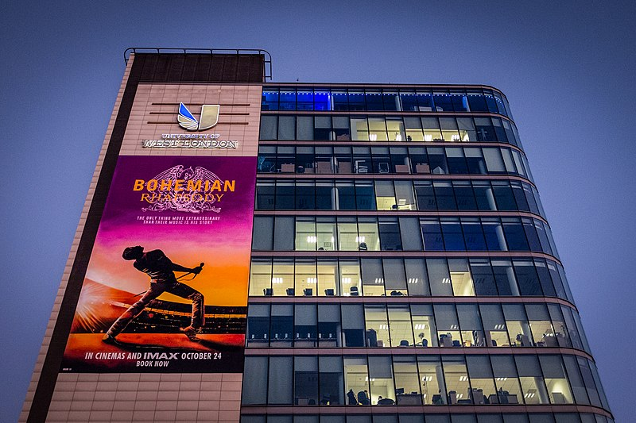

Mural promocional de fillm en Londres
En 1970, Farrokh Bulsara, un estudiante británico de origen parsi que trabaja
transportando equipajes en el aeropuerto de Heathrow, se dirige a un club
nocturno para ver a una banda local llamada Smile. Después de la presentación,
Farrokh conoce al guitarrista Brian May y al baterista Roger Taylor, y se ofrece
a sí mismo para ser el nuevo vocalista de la banda después de la partida de su
cantante y bajista Tim Staffell. Con la llegada del bajista John Deacon, la
banda —ahora conocida como Queen— toca en lugares pequeños alrededor de Inglaterra
hasta que deciden vender su camioneta para producir su álbum debut. Su estilo
musical les permite un contrato con EMI Records. Al mismo tiempo, Farrokh
cambia su nombre a Freddie Mercury y comienza una relación con Mary Austin.
Durante la primera gira de la banda por Estados Unidos, Freddie comienza a
tener dudas sobre su sexualidad.
En 1975, Queen graba su álbum A Night at the Opera, pero deciden dejar al ejecutivo
de EMI Ray Foster cuando este rechaza publicar la canción de seis minutos "Bohemian
Rhapsody" como el primer sencillo del disco. Freddie hace que el DJ de Capital
Radio, Kenny Everett, haga debutar la canción poniéndola al aire. A pesar de tener
críticas mixtas, "Bohemian Rhapsody" se convierte en un éxito masivo. Poco después
de regalarle a Mary un anillo de compromiso, terminan su relación cuando Freddie le
revela que es bisexual. Comienza una relación sentimental y laboral con Paul
Prenter, el segundo representante de la banda.
El éxito de la banda continúa en la década de los '80, pero las tensiones entre los
miembros del grupo crecen por sobre el enfoque de su música. Después de una fiesta
en la residencia de Freddie, este conoce a Jim Hutton, uno de los garzones en el
evento. Cada uno continúa su camino, pero Jim le pide a Freddie que, si quiere
buscarlo, lo haga una vez que se encuentre a sí mismo. El grupo ofrece una
conferencia de prensa para promocionar su álbum de 1982 Hot Space, pero los
periodistas bombardean a Freddie con preguntas sobre su vida privada y su
sexualidad. Freddie comienza a distanciarse con sus compañeros de banda cuando
este les anuncia que firmó un contrato de $4 millones con CBS Records para
continuar una carrera en solitario. Se marcha a Múnich en 1984 para trabajar en
su primer disco solista, Mr. Bad Guy, y también involucrarse en numerosas orgías
homosexuales con Prenter. Una noche, Mary lo visita sin previo aviso y lo persuade
de regresar a la banda, ya que se les ofreció un cupo para participar en el
concierto benéfico Live Aid en el estadio Wembley de Londres. Después de descubrir
que Prenter le ocultó la información sobre Live Aid, Freddie lo despide; en
represalia, Prenter hace públicas las aventuras sexuales de Freddie. Con la noticia
de la expansión del SIDA a nivel mundial, Freddie se realiza secretamente exámenes
médicos y descubre que padece la mortal enfermedad.